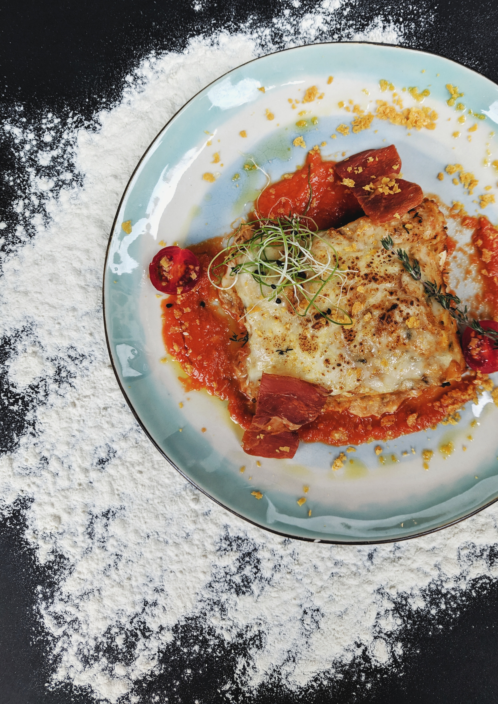

Odin Lasagna

Ingredients (Serves 12)
- 2 pounds fresh or packaged whole-milk ricotta cheese
- Italian-American meat sauce
- 2 pounds of lasagna noodles
- 2 tablespoons olive oil
- 2 large eggs
- Pinch of salt
- 2 ½ cups freshly grated grana padano cheese
- 1 pound mozzarella cheese, preferably fresh, sliced thin
Steps
- Line a sieve with a double thickness of cheesecloth or a basket-type coffee filter.
Place the ricotta over the cheesecloth and set the sieve over a bowl.
Cover with plastic wrap and refrigerate overnight or for up to one day.
Discard the liquid that drains into the bowl. Make the meat sauce.
- Bring 6 quarts of salted water and the olive oil to a boil in an 8-quart pot over high heat.
Stir about one-third of the lasagna noodles into the boiling water.
Return to a boil, stirring frequently.
Cook the pasta, semi-covered, stirring occasionally, until al dente, 8 to 10 minutes.
- While the pasta is cooking, set a large bowl of ice water next to the stove.
When the lasagna noodles are al dente, remove them with a wire skimmer and transfer them to the ice water.
Let them stand until completely chilled. Repeat the cooking and cooling with the remaining two batches of lasagna noodles.
When the cooked noodles are chilled, remove them from the ice bath and stack them on a baking sheet, separating each
layer with a clean, damp kitchen towel.
-
While the noodles are cooking, beat the eggs with the salt in a mixing bowl until foamy. Add the ricotta and stir until thoroughly blended.
Preheat the oven to 375 degrees F.
-
To assemble the lasagna, ladle about 3/4 cup of the meat sauce over the bottom of a 15 x 10-inch baking dish.
Arrange noodles lengthwise and side by side so as to cover the bottom of the baking dish and overhang the short ends of the dish by about 2 inches.
(A little ‘cut and paste’ might be necessary. Also, the noodles will most likely overlap in the center of the dish. That is fine.)
-
Spoon enough meat sauce, about 2 cups, to cover the noodles in an even layer. Sprinkle the sauce with ½ cup of grated cheese.
Arrange a single layer of noodles crosswise over the cheese so they overhang the long sides of the baking dish by about 2 inches,
again trimming the noodles and overlapping them as necessary.
-
Spread the ricotta mixture evenly over the noodles. Arrange a single layer of noodles lengthwise over the ricotta, trimming the noodles as necessary.
Arrange the sliced mozzarella in an even layer over the noodles. Spread 1 cup of the meat sauce over the cheese and sprinkle 1 cup of grated cheese over the sauce.
Cover with a layer of noodles arranged lengthwise.
-
Spread a thin layer of meat sauce over the top layer of noodles. Sprinkle with the remaining grated cheese.
Cover loosely with aluminum foil and bake for 45 minutes.
-
Uncover the lasagna and continue baking until the top is crusty around the edges, about 20 minutes. Let rest at least 30 minutes or up to 3 hours before cutting and serving.
-
To rewarm a lasagna that has been standing, cover it loosely with foil and place in a 325 degrees F oven until heated through, 15 to 45 minutes, depending on how long it has been standing.